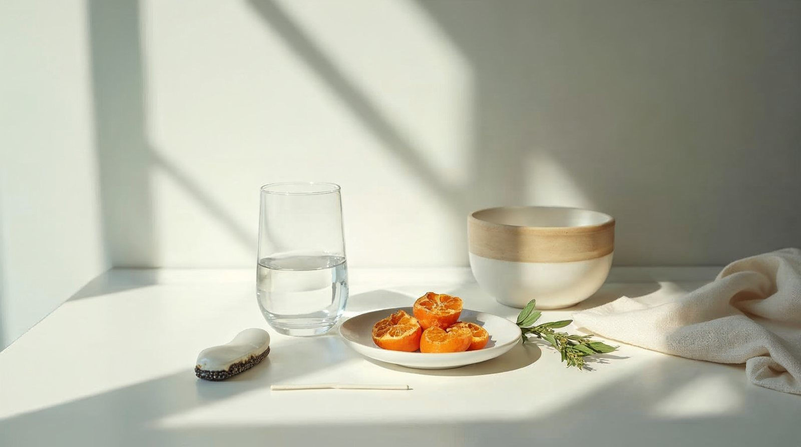
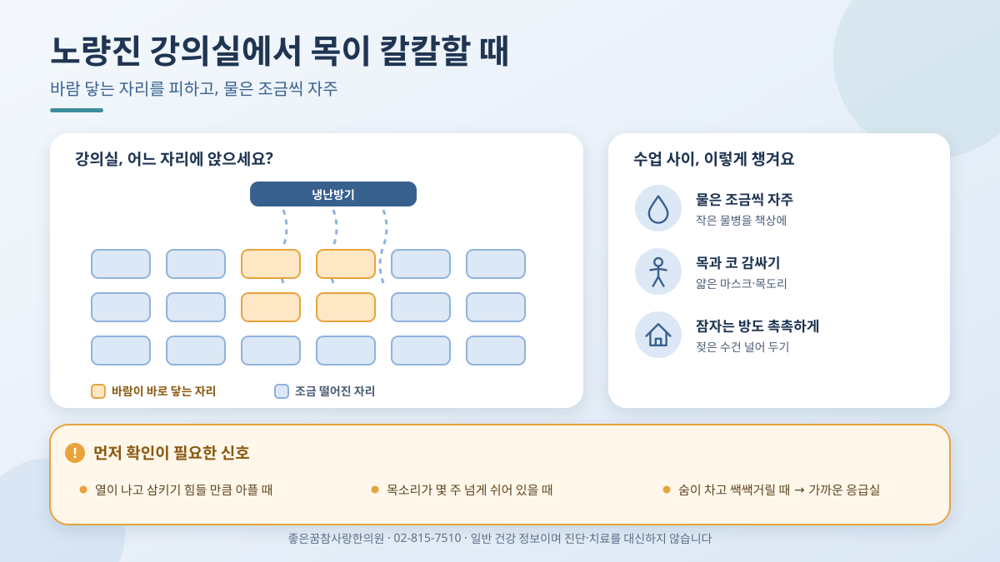

이종호 한의사 감수좋은꿈참사랑한의원 대표원장 (한의사 면허번호 19769)발행 2026-11-24 · 수정 2026-11-26
이 글의 차례
- 왜 이런 불편이 생길 수 있나요
- 먼저 이렇게 여쭙니다
- 일상에서 먼저 해 볼 수 있는 것
- 목이 칼칼한 게 건조함 때문인지 어떻게 구별하나요?
- 상황별 예시
- 스스로 점검해 보세요
- 강의실에서 물은 어떻게 마시면 좋을까요?
- 잠자는 동안 목을 지키려면 어떻게 하나요?
- 피곤할수록 목이 더 마르는 건 왜일까요?
- 한의원에서 함께 살필 수 있는 경우
- 첫 진료에서는 목과 코를 어떻게 살피나요?
- 쉬는 시간 10분은 이렇게 써 보세요
- 얼마나 지켜보고 언제 상담할까요
- 스터디나 면접 연습이 있는 날은 어떻게 하나요?
- 이렇게 기록해 오시면 상담이 쉬워집니다
- 이런 증상은 먼저 확인이 필요합니다
- 관련 글
냉난방 바람이 직접 닿는 자리를 피하고 물을 조금씩 자주 마시는 것만으로도 목과 코가 덜 마르는 경우가 많습니다. 노량진 학원 강의실은 여름엔 에어컨, 겨울엔 난방이 하루 종일 켜져 있어, 수업이 끝날 즈음 목이 칼칼하고 코 안이 마른다는 수험생이 적지 않습니다.
강의실 공기 때문이라면 학원에 가지 않는 주말에는 목이 한결 편하다는 분이 많습니다. 쉬는 날에도 칼칼함이 그대로이고 2~3주 넘게 이어진다면 환경만 바꾸며 기다리기보다 잠자리 환경과 피로까지 함께 살펴보시는 것이 좋습니다.
왜 이런 불편이 생길 수 있나요
- 냉난방을 오래 켜 두면 실내 공기가 건조해지고, 바람이 직접 닿는 자리는 코와 목 점막이 더 쉽게 마를 수 있습니다.
- 공부에 집중하다 보면 물 마시는 횟수가 줄고, 입을 벌리고 숨 쉬는 시간이 늘어 목이 더 칼칼해지기도 합니다.
- 겨울 난방은 실내 온도를 올리면서 공기 속 습기를 상대적으로 낮춰, 오후 수업으로 갈수록 목이 더 마른다고 느끼기 쉽습니다.
- 사람이 많은 강의실은 환기가 부족해 공기가 답답하게 느껴지고, 물 대신 커피나 단 음료로 목을 축이는 날에는 금방 다시 마른다고 말하는 분이 있습니다.
- 잠이 부족하고 피로가 쌓이면 같은 환경에서도 목과 코의 불편을 더 크게 느끼는 분이 있습니다.
- 한의학에서는 건조한 환경과 함께 잠, 피로, 몸의 열감 같은 전체 상태도 함께 살핍니다.
먼저 이렇게 여쭙니다
- 강의실에서 하루에 몇 시간 정도 앉아 있나요?
- 에어컨이나 히터 바람이 바로 닿는 자리에 앉나요?
- 물은 하루에 얼마나 마시나요?
- 아침에 일어나면 목이 더 마르고 아픈가요?
- 학원에 가지 않는 주말에는 목이 덜 불편한가요?
- 잘 때 코가 막혀 입으로 숨을 쉬거나 입을 벌리고 자나요?
- 다시 오신 분께는 지난번 이후 자리와 물 마시는 습관을 바꿔 보셨는지부터 이어서 여쭙니다.
일상에서 먼저 해 볼 수 있는 것
- 바람이 직접 닿지 않는 자리 고르기
- 작은 물병을 두고 조금씩 자주 마시기, 커피는 오전 한두 잔으로 정해 두기
- 얇은 마스크나 목도리로 목과 코 감싸기
- 쉬는 시간에는 복도나 바깥으로 나가 잠시 바깥 공기 쐬기
- 고시원이나 원룸처럼 작은 방은 난방 온도를 조금 낮추고, 자기 전 잠깐 환기하기
- 잠자는 방이 건조하면 젖은 수건을 널어 두기
- 아침에 일어나 바로 커피를 마시기보다 미지근한 물 한 컵으로 입과 목을 먼저 적시기
- 코 안이 마를 때는 손가락으로 후비지 말고, 세수할 때 따뜻한 김을 코로 천천히 들이마셔 보기
목이 칼칼한 게 건조함 때문인지 어떻게 구별하나요?
목이 칼칼하다는 같은 말 안에도 원인이 여러 갈래로 섞여 있습니다. 저는 첫 진료에서 칼칼함이 언제 시작되고 언제 덜해지는지부터 여쭙는데, 이 흐름만 들어도 살필 방향이 꽤 달라지기 때문입니다.
- 건조함이 중심이라면 강의실에 오래 있을수록 심해지고, 물을 마시거나 바깥 공기를 쐬면 잠시 편해집니다. 학원에 가지 않는 주말에 덜한 것도 흔한 모습입니다.
- 감기 기운이라면 며칠 사이 목이 따끔하다가 콧물, 몸살, 열감이 따라오고, 장소와 상관없이 하루 종일 불편합니다.
- 코 뒤로 콧물이 넘어가는 경우라면 아침에 목에 무언가 걸린 느낌이 들고 헛기침이 잦으며, 누우면 더 거슬린다고 말하는 분이 많습니다.
- 위산이 올라오는 경우라면 늦은 야식이나 커피 뒤, 누운 직후에 목이 따갑고 신물이 올라오는 느낌이 함께 있습니다.
- 목을 많이 써서라면 스터디나 발표로 말을 많이 한 날 목소리가 갈라지고, 말을 쉬면 덜해집니다.
한 사람에게 두세 가지가 겹치는 일도 흔합니다. 예를 들어 낮에는 건조한 강의실에 있고, 밤에는 야식을 먹고 바로 누우며, 코가 막혀 입을 벌리고 자는 경우라면 낮과 밤의 원인을 나눠 하나씩 줄여 보는 것이 좋습니다.
상황별 예시
- 예를 들어 아침부터 저녁까지 종합반 수업을 듣는 공무원 수험생의 경우, 히터 바로 아래 자리에서 하루를 보내면 오후 수업이 끝날 무렵 목이 따갑고 코 안이 당길 수 있습니다. 자리를 정할 수 있다면 바람이 닿지 않는 쪽을 고르고, 바꾸기 어렵다면 목도리와 물병부터 챙겨 보세요.
- 예를 들어 하루 여러 강의를 하는 학원 강사의 경우, 마이크를 쓰더라도 말하는 시간이 길어 건조함과 목의 피로를 함께 겪기 쉽습니다. 강의 사이에 말을 쉬는 시간을 짧게라도 두고 물을 마시는지 함께 살펴봅니다.
- 예를 들어 강의실에서 돌아와 작은 방에서 난방을 켜고 자는 수험생의 경우, 낮의 강의실과 밤의 방이 모두 건조해 아침에 일어날 때 목이 가장 칼칼하다고 말하기도 합니다. 이럴 때는 낮보다 잠자리 습도와 입을 벌리고 자는지부터 살펴봅니다.
스스로 점검해 보세요
- 학원에 있는 동안 물을 세 번도 채 마시지 않는다
- 냉난방 바람이 얼굴이나 목에 바로 닿는 자리에 앉는다
- 아침에 일어나면 목이 가장 칼칼하고 입이 말라 있다
- 쉬는 시간에 물 대신 커피나 에너지 음료를 마신다
- 코 안이 말라 딱지가 생기거나 코를 자주 만진다
- 학원에 가지 않는 날에도 목이 계속 아프고 열감이 있다
앞의 다섯 가지는 자리와 물, 잠자리 습도부터 바꿔 볼 신호입니다. 마지막 항목은 환경 탓만으로 보기 어려워 다른 원인을 함께 살펴야 하는 신호입니다.
강의실에서 물은 어떻게 마시면 좋을까요?
목이 마르다고 쉬는 시간에 큰 컵으로 한 번에 들이켜면 금방 화장실이 급해지고, 수업 중에는 다시 마릅니다. 그래서 저는 양보다 간격을 먼저 말씀드립니다.
- 책상 위에 작은 물병을 두고 수업 중에도 한두 모금씩 입을 적시기
- 차가운 물보다 미지근한 물이나 보리차처럼 자극이 적은 것 고르기
- 쉬는 시간마다 물병을 반쯤 채워, 하루에 마신 양을 눈으로 확인하기
- 커피나 단 음료는 목을 축이는 용도로 쓰지 않기
- 저녁 늦게는 물 양을 조금 줄여 밤에 화장실 때문에 깨지 않게 조절하기
화장실 가는 것이 신경 쓰여 일부러 물을 참는 수험생이 생각보다 많습니다. 강의실 뒤쪽이나 통로 쪽 자리를 고르면 수업 중에 잠깐 나가기가 덜 부담스럽다는 이야기를 자주 듣습니다.
잠자는 동안 목을 지키려면 어떻게 하나요?
아침에 목이 가장 칼칼하다면 낮의 강의실보다 밤의 방이 더 큰 몫을 하고 있을 수 있습니다. 하루 중 가장 오래 같은 공기를 마시는 곳이 잠자리이기 때문입니다.
- 난방은 덥다 싶을 만큼 올리지 말고 이불로 체온을 맞추기
- 가습기를 쓴다면 머리맡에서 조금 떨어진 곳에 두고, 물은 매일 갈고 통을 자주 씻기
- 가습기가 없다면 젖은 수건이나 빨래를 방 안에 널어 두기
- 자기 직전 야식은 피하고, 먹었다면 두세 시간 지난 뒤 눕기
- 베개를 너무 낮게 베지 않아 코와 목이 편하게 열리도록 하기
입을 벌리고 자는지는 스스로 알기 어렵습니다. 아침에 입술이 갈라져 있거나 혀가 바짝 말라 있거나, 함께 지내는 사람에게 코를 곤다는 말을 들은 적이 있다면 짐작해 볼 수 있습니다.
피곤할수록 목이 더 마르는 건 왜일까요?
시험이 가까워져 잠을 줄이는 시기에는 같은 강의실에서도 목이 더 쉽게 마른다고 말하는 분이 많습니다. 한의학에서는 잠이 부족하고 긴장이 이어지면 몸이 진액을 지키는 힘이 떨어져, 입과 목이 쉽게 마르고 손발이나 얼굴에 열감을 느끼기도 한다고 봅니다.
그래서 진료에서는 목만 보지 않고 잠드는 시각, 오후에 얼굴이 달아오르는지, 손발바닥이 화끈거리는지, 대변이 단단해졌는지도 함께 여쭙니다. 이런 흐름이 함께 보이면 환경을 바꾸는 것과 함께 잠과 피로를 같이 다루는 쪽으로 계획을 세웁니다.
한의원에서 함께 살필 수 있는 경우
- 목이 칼칼한 느낌이 오래가는 경우 목과 코의 상태, 잠을 함께 살핍니다.
- 코가 마르고 자주 막히는 경우 잠자리 환경과 생활 습관을 함께 살핍니다.
- 피곤하면 목부터 붓는 경우 피로와 잠의 리듬을 함께 살핍니다.
좋은꿈참사랑한의원에서는 첫 방문 때 맥부터 짚어 보며 목과 코가 불편해지는 시간대, 강의실 자리와 냉난방, 잠자리 환경과 잠드는 시각을 여쭙습니다. 필요하다고 판단될 때 설진을 더해 혀의 색과 설태를 살핍니다.
그 뒤 침이나 한약 상담 등 상태에 맞는 방법을 정하고, 귀가 전에는 강의실과 잠자리에서 조절할 점을 알려 드립니다. 노량진역에서 오실 때는 3번 출구에서 마을버스 동작01을 타고 신동아리버파크에서 내리시면 됩니다.
첫 진료에서는 목과 코를 어떻게 살피나요?
처음 오시면 접수 뒤 맥부터 짚고, 목이 칼칼해진 시기와 하루 중 가장 불편한 때를 여쭙습니다. 강의실 자리와 냉난방, 잠자리 습도처럼 환경 이야기를 먼저 듣는 것은 같은 증상이라도 생활에 따라 손댈 곳이 다르기 때문입니다.
그다음 잠과 소화, 대변, 땀과 열감처럼 몸 전체의 흐름을 여쭙고, 필요하다고 판단되면 설진으로 혀의 색과 설태를 봅니다. 목 안쪽의 편도나 성대는 한의원에서 들여다보는 부분이 아니어서, 쉰 목소리가 오래가거나 목에 혹이 만져지면 이비인후과 진찰을 먼저 권합니다.
복용 중인 감기약이나 비염약이 있다면 이름을 알려 주세요. 한약 상담은 지금 드시는 약을 확인한 뒤에 이야기하고, 처방받은 약은 임의로 끊지 않으시도록 말씀드립니다. 임신 중이거나 임신 가능성이 있다면 진료 전에 먼저 알려 주세요.
쉬는 시간 10분은 이렇게 써 보세요
쉬는 시간마다 자리에 앉아 휴대폰을 보다 보면 목과 코는 하루 종일 같은 공기 속에 머뭅니다. 10분을 나눠 쓰는 순서를 정해 두면 따로 시간을 내지 않아도 됩니다.
- 처음 2~3분은 복도나 건물 밖으로 나가 코로 천천히 숨쉬기
- 물병을 채우고 미지근한 물을 몇 모금 나눠 마시기
- 어깨를 으쓱했다 내리며 목 주변의 힘 풀기
- 자리로 돌아와 목도리나 겉옷으로 바람이 닿는 쪽 막기
이 순서는 목만을 위한 것이 아니라 오후 졸음과 어깨 뻐근함을 덜어 주는 데도 도움이 됩니다. 수업이 이어지는 날일수록 쉬는 시간을 자리에서 보내지 않는 습관을 들여 보세요.
얼마나 지켜보고 언제 상담할까요
- 자리와 물 마시는 습관, 잠자리 습도를 바꾼 뒤 1~2주는 목과 코가 어떻게 달라지는지 지켜보세요.
- 2~3주가 지나도 칼칼함이 그대로이거나 학원에 가지 않는 날에도 목이 불편하다면 상담을 권합니다.
- 코피가 자주 나거나 코막힘 때문에 잠을 설치는 날이 늘었다면 더 기다리지 말고 상담해 보세요.
스터디나 면접 연습이 있는 날은 어떻게 하나요?
건조한 강의실에서 하루를 보낸 뒤 저녁에 스터디나 면접 연습으로 말을 오래 하면, 이미 마른 목에 피로가 한 번 더 얹힙니다. 이런 날은 목소리를 아껴 쓰는 순서를 미리 정해 두면 좋습니다.
- 스터디 전에 미지근한 물을 마시고, 말하는 동안에도 물병을 옆에 두기
- 큰 소리로 말하기보다 상대와 가까이 앉아 평소 목소리로 말하기
- 목을 가다듬는 헛기침 대신 침을 삼키거나 물 한 모금 마시기
- 연습이 끝난 뒤에는 한동안 말을 줄이고 목을 쉬게 하기
면접이 가까워 연습을 줄이기 어렵다면, 연습 횟수보다 한 번에 말하는 시간을 짧게 나누는 쪽을 먼저 권합니다. 목소리가 쉬어 며칠씩 이어진다면 진료 때 그 일정도 함께 알려 주세요.

이렇게 기록해 오시면 상담이 쉬워집니다
- 목이 칼칼해지는 시간대(오전 수업, 오후, 밤, 아침 기상 직후)
- 강의실 자리와 냉난방 바람의 방향, 하루에 마시는 물의 양
- 학원에 가는 날과 가지 않는 날의 목 상태 차이
- 잠자는 방의 난방 온도와 습도를 맞추는 방법
- 코막힘, 코피, 기침, 목소리 변화가 함께 있는지
- 복용 중인 감기약이나 비염약, 쓰고 있는 코 스프레이 이름
- 야식을 먹은 날과 먹지 않은 날, 다음 날 아침 목 상태가 어떻게 달랐는지
- 스터디나 발표처럼 말을 많이 한 날이 언제였는지
이런 증상은 먼저 확인이 필요합니다
- 열이 나고 침을 삼키기 힘들 만큼 목이 아프거나, 숨쉬기가 답답한 경우
- 목소리가 몇 주 넘게 쉬어 있는 경우
이런 신호가 있으면 한의원보다 가까운 병원이나 응급실을 먼저 찾으세요.
관련 글
- 독서실 난방 때문에 코가 마르고 코피가 살짝 날 때는 어떻게 살피나요?
- 자고 일어나면 입이 바짝 마르고 목이 칼칼할 때는 어떻게 살피나요?
- 난방과 가습기를 쓰는데도 공기가 건조하게 느껴질 때는 어떻게 하나요?

여쭙는 것
- 강의실에서 하루에 몇 시간 정도 앉아 있나요?
- 에어컨이나 히터 바람이 바로 닿는 자리에 앉나요?
- 물은 하루에 얼마나 마시나요?
생활에서 해 볼 것
- 바람이 직접 닿지 않는 자리 고르기
- 작은 물병을 두고 조금씩 자주 마시기, 커피는 오전 한두 잔으로 정해 두기
- 얇은 마스크나 목도리로 목과 코 감싸기
한의원에서 함께 살필 것
- 목이 칼칼한 느낌이 오래가는 경우 목과 코의 상태, 잠을 함께 살핍니다.
- 코가 마르고 자주 막히는 경우 잠자리 환경과 생활 습관을 함께 살핍니다.
- 피곤하면 목부터 붓는 경우 피로와 잠의 리듬을 함께 살핍니다.
먼저 확인이 필요한 신호
- 열이 나고 침을 삼키기 힘들 만큼 목이 아프거나, 숨쉬기가 답답한 경우
- 목소리가 몇 주 넘게 쉬어 있는 경우
한눈에 보는 표
| 구분 | 핵심 |
|---|---|
| 여쭙는 것 | 강의실에서 하루에 몇 시간 정도 앉아 있나요? 에어컨이나 히터 바람이 바로 닿는 자리에 앉나요? |
| 생활에서 해 볼 것 | 바람이 직접 닿지 않는 자리 고르기 작은 물병을 두고 조금씩 자주 마시기, 커피는 오전 한두 잔으로 정해 두기 |
| 한의원에서 함께 살필 것 | 목이 칼칼한 느낌이 오래가는 경우 목과 코의 상태, 잠을 함께 살핍니다. 코가 마르고 자주 막히는 경우 잠자리 환경과 생활 습관을 함께 살핍니다. |
| 먼저 확인이 필요한 신호 | 열이 나고 침을 삼키기 힘들 만큼 목이 아프거나, 숨쉬기가 답답한 경우 목소리가 몇 주 넘게 쉬어 있는 경우 |
자주 묻는 질문
목이 칼칼할 때 사탕을 계속 먹어도 되나요?
잠깐 편할 수 있지만 단 것을 계속 먹기보다 물을 조금씩 자주 마시는 것을 권합니다.
강의실 자리를 바꾸기 어려우면 어떻게 하나요?
바람을 피할 수 있도록 겉옷이나 목도리로 목을 감싸고, 쉬는 시간마다 물을 마셔 보세요.
마스크를 쓰고 공부하면 목이 덜 마르나요?
얇은 마스크를 쓰면 들이쉬는 공기가 덜 건조하게 느껴져 편하다는 분이 있습니다. 답답하면 쉬는 시간에 잠시 벗고 환기하며 조절해 보세요.
진료 시간은 어떻게 되나요?
좋은꿈참사랑한의원은 평일 09:30~20:00(점심 13:00~14:00), 토·일·공휴일 09:30~15:00에 진료합니다.
좋은꿈참사랑한의원은 재진 때 지난번 이야기부터 이어서 여쭙니다. 진료시간과 예약은 오시는 길에서 확인하세요.
어디서 상담받을 수 있나요?
좋은꿈참사랑한의원은 서울 동작구 만양로2길 2 신성빌딩 3층·5층(서울 동작구 상도동, 7호선 상도역 3번 출구 근처)에 있습니다. 한의사 3명(이종호 대표원장, 조영기 수석진료원장, 정원영 진료원장)이 진료합니다. 진료시간은 평일 09:30~20:00(점심 13:00~14:00), 토·일·공휴일 09:30~15:00이며, 방문 전 전화로 확인을 권합니다. 예약은 네이버 예약, 카카오톡 상담, 전화 02-815-7510로 받습니다.
이 글은 일반적인 건강 정보이며 개인의 진단이나 치료를 대신하지 않습니다. 증상이 있거나 복용 중인 약이 있다면 진료를 통해 확인하세요. 치료 효과는 개인마다 다를 수 있습니다.
작성 기준: 일반적으로 알려져 있는 건강 정보를 참고해 정리했습니다(대표원장 감수). 증상 기록은 1~2주 동안 하루 1회, 비슷한 시간에 적어 오시면 지난 상태와 비교하기 쉽습니다.